Every operation of 37 public APIs, drawn as a metro map. 27,735 operations become stops, tags become lines, and the places where one resource reaches into another become interchanges. Every stop links to its documentation on APIs.io.
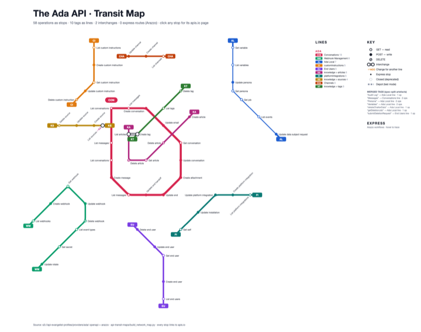
58 operations · 10 lines · 2 interchanges
Open map · On APIs.io
130 operations · 22 lines · 2 interchanges
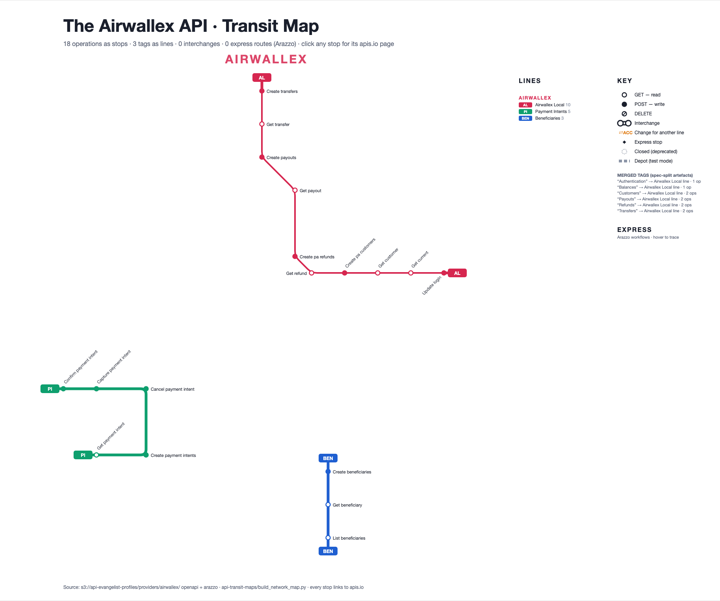
18 operations · 3 lines · 0 interchanges
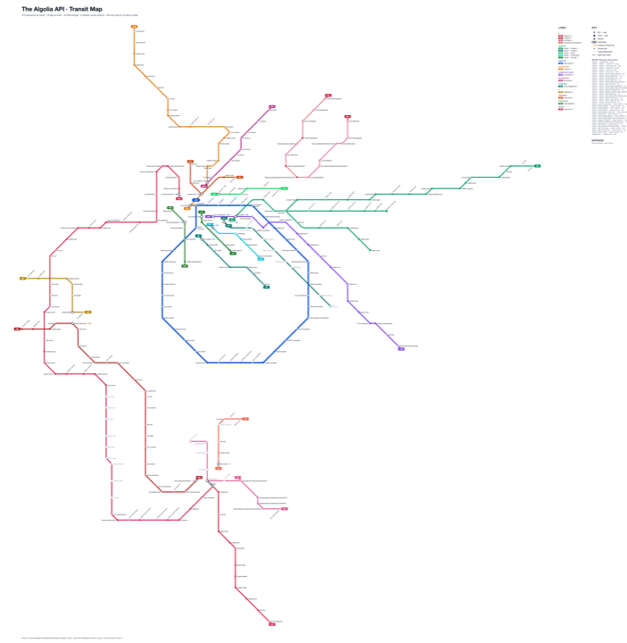
279 operations · 18 lines · 16 interchanges
194 operations · 14 lines · 3 interchanges
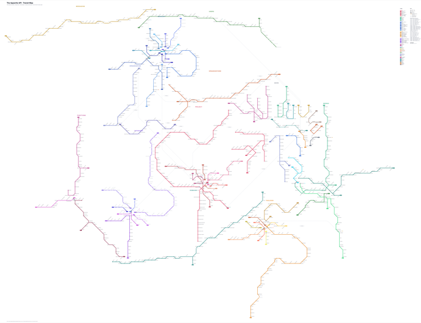
1,022 operations · 62 lines · 59 interchanges
528 operations · 78 lines · 75 interchanges
4,531 operations · 499 lines · 11-sheet atlas
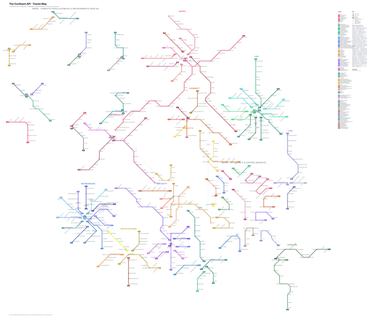
616 operations · 102 lines · 76 interchanges
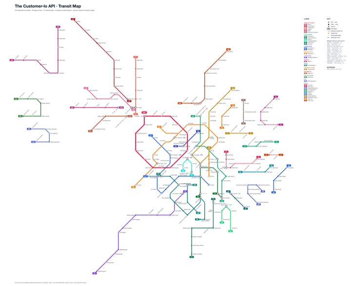
220 operations · 33 lines · 27 interchanges
118 operations · 17 lines · 7 interchanges
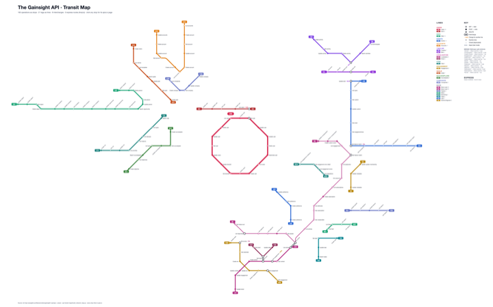
165 operations · 21 lines · 8 interchanges
1,278 operations · 96 lines · 158 interchanges
1,863 operations · 151 lines · 232 interchanges
2,838 operations · 303 lines · 7-sheet atlas
1,052 operations · 81 lines · 67 interchanges
967 operations · 76 lines · 30 interchanges
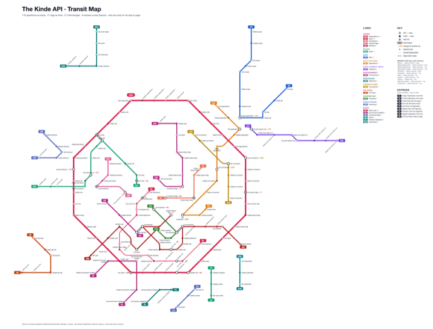
179 operations · 21 lines · 21 interchanges
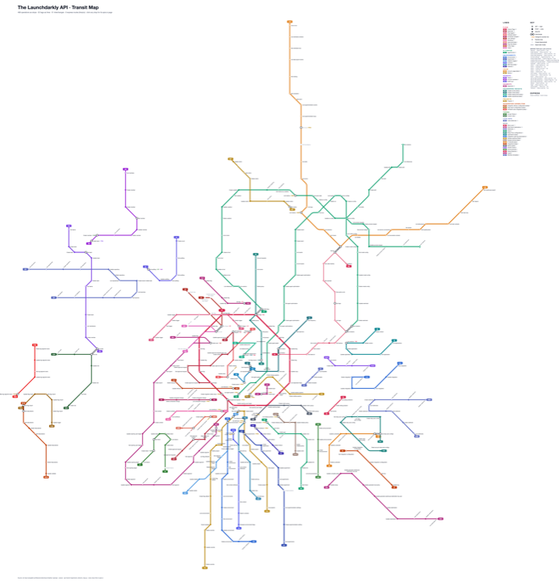
468 operations · 52 lines · 51 interchanges
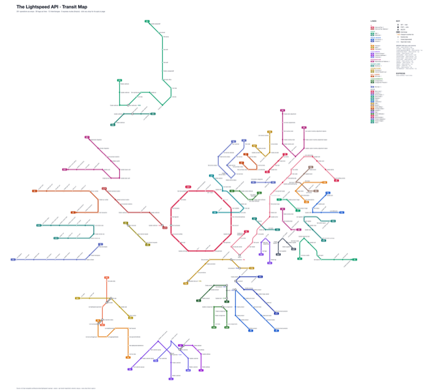
291 operations · 39 lines · 12 interchanges
349 operations · 46 lines · 46 interchanges
227 operations · 36 lines · 26 interchanges
352 operations · 39 lines · 37 interchanges
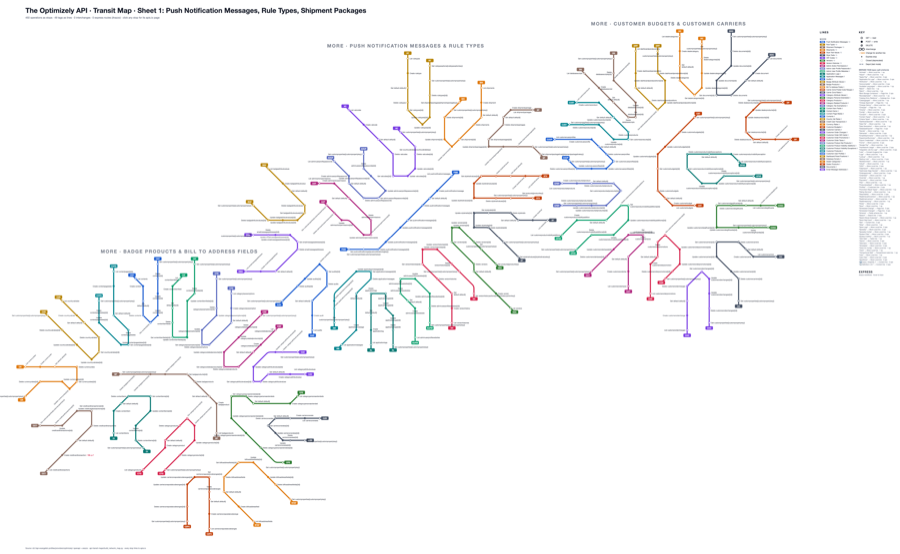
3,504 operations · 328 lines · 8-sheet atlas
370 operations · 34 lines · 4 interchanges
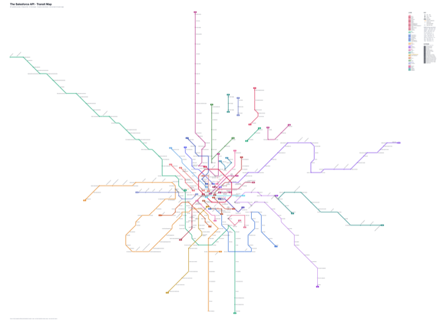
381 operations · 36 lines · 34 interchanges
389 operations · 52 lines · 41 interchanges
312 operations · 37 lines · 39 interchanges
279 operations · 43 lines · 35 interchanges
518 operations · 64 lines · 80 interchanges
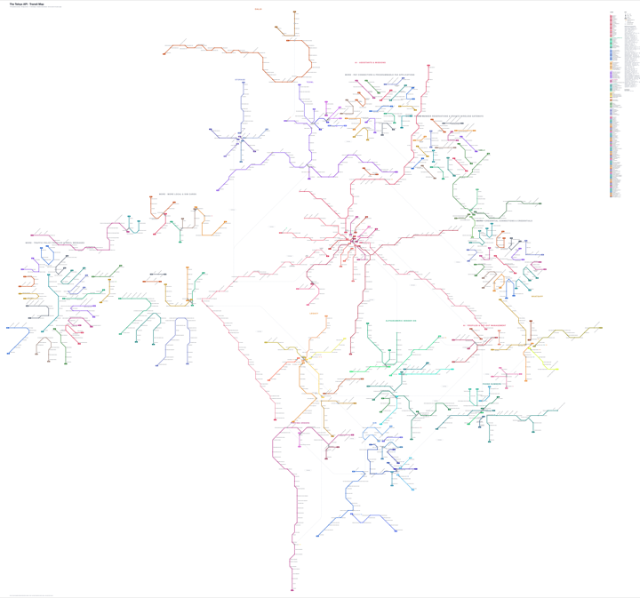
1,473 operations · 168 lines · 111 interchanges
105 operations · 13 lines · 11 interchanges
1,184 operations · 131 lines · 88 interchanges
483 operations · 65 lines · 51 interchanges
390 operations · 60 lines · 13 interchanges
405 operations · 45 lines · 30 interchanges
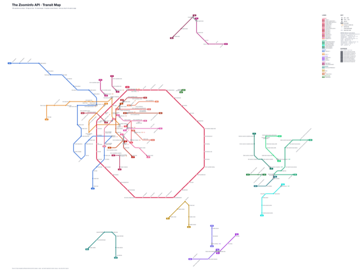
199 operations · 33 lines · 34 interchanges